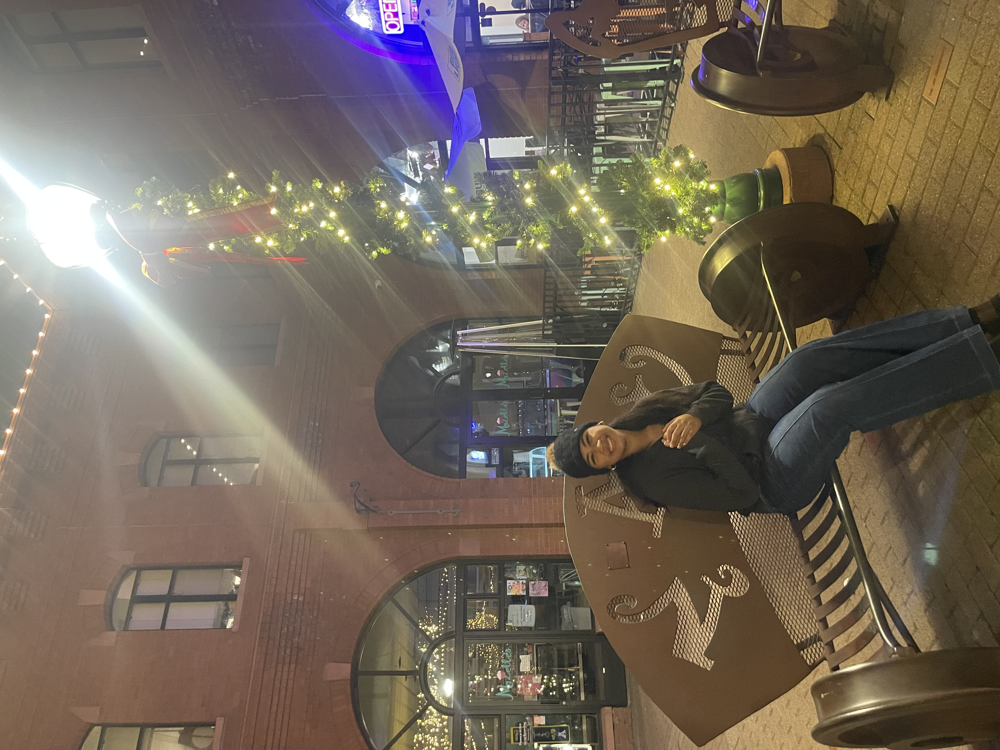
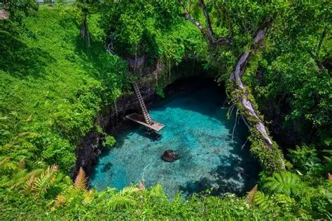

Lawren Talamaivao
About Me
My name is Lawren Talamaivao and I am from Samoa. I am currently studying through BYU-Pathway Worldwide and learning web development. I enjoy learning new skills, working with technology, and spending time with family and friends.

Apia, Samoa
Samoa is a beautiful island nation located in the South Pacific Ocean. It is known for its rich culture, strong traditions, stunning beaches, waterfalls, and welcoming people. Samoa's natural beauty and family-centered values make it a unique and special place.

Web Dev Resources
- https://developer.mozilla.org/MDN Web Docs
- https://www.w3schools.com/W3Schools
- https://css-tricks.com/CSS Tricks
- https://github.com/GitHub
- https://www.byupathway.edu/BYU-Pathway Worldwide